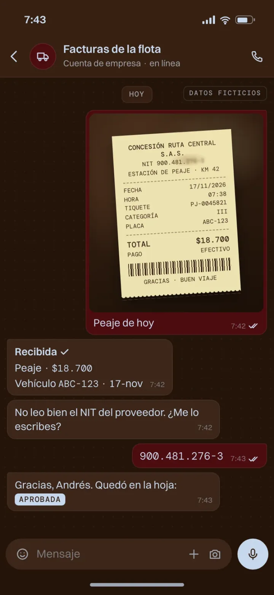
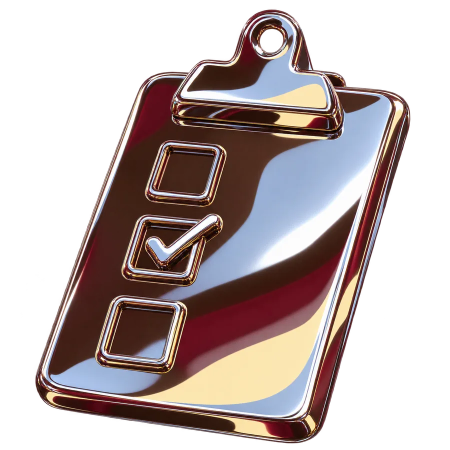
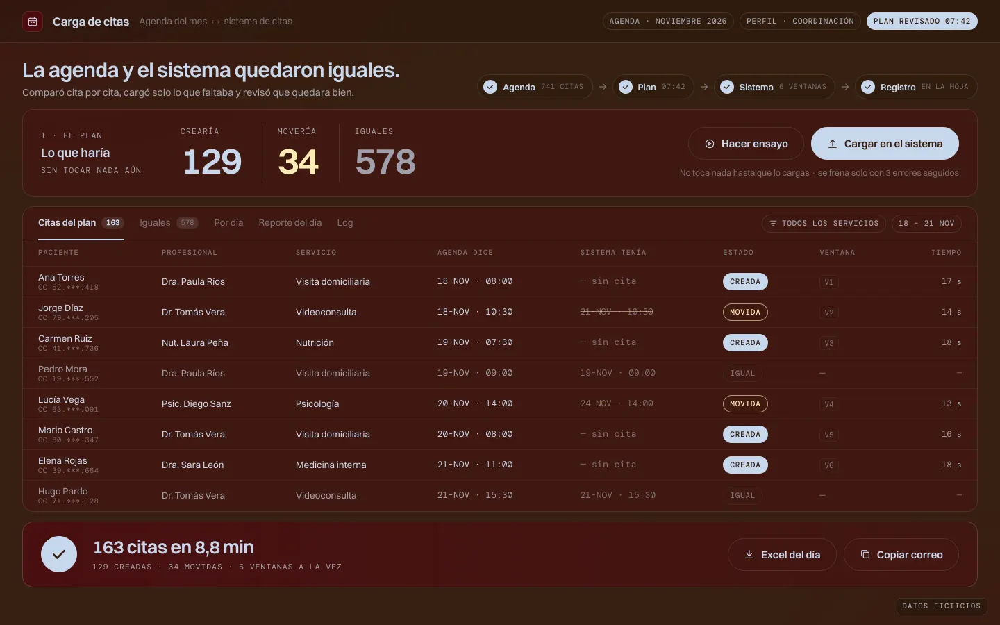
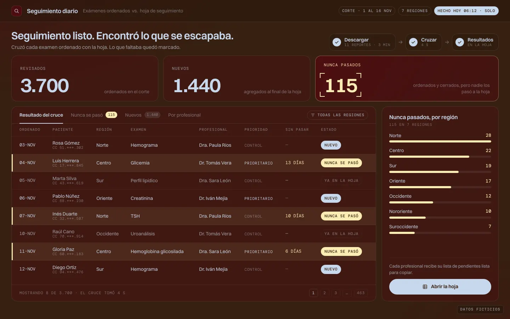
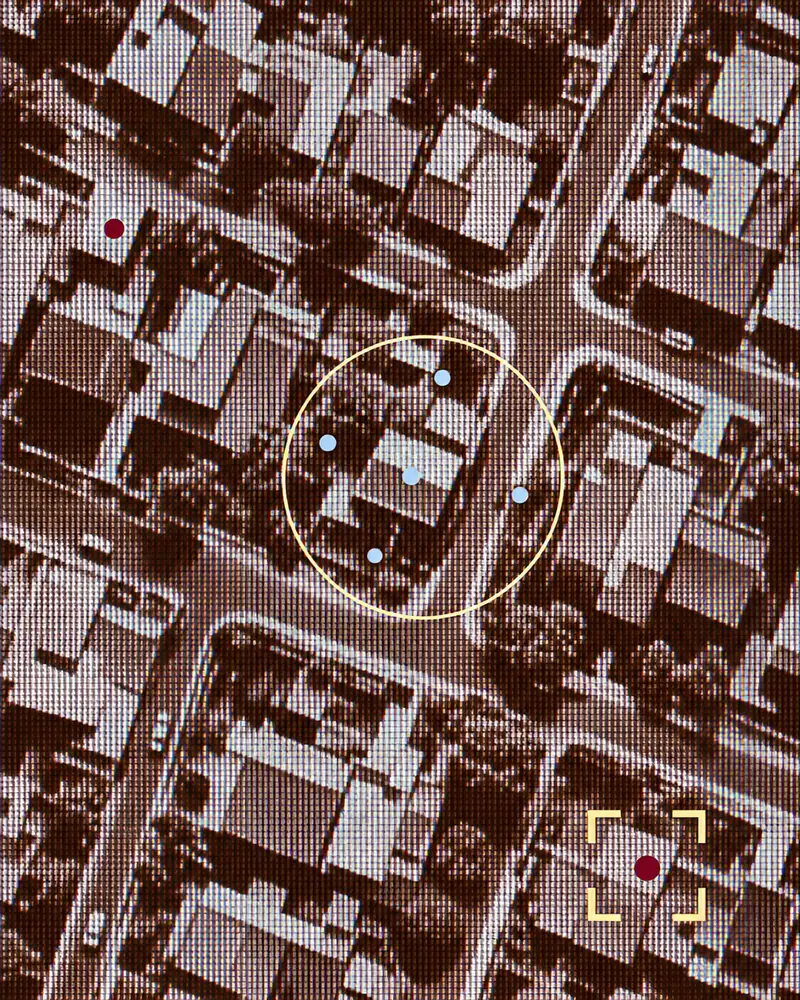

Deja de hacerlo a mano
Te decimos, gratis, qué tareas de tu negocio puede hacer la IA, cuánto tiempo te ahorra y cuánto cuesta. Por escrito, en 48 horas.
Gratis · 20 minutos · Por WhatsApp
Y si algo falla en el primer mes después de la entrega, lo arreglamos sin costo.
o pruébalo aquí abajo
Serie activa
Saturnoid
Nuestra serie en Instagram: una nave que despega cuando llena sus asientos. Comenta el episodio y te damos el tuyo.
Pruébalo
Así contestaría tu WhatsApp
Escoge tu negocio y toca los mensajes de abajo, como si fueras tu cliente.
DemostraciónCon datos de ejemplo. Así contestaría el agente; no es una IA en vivo.
Tu restaurante
Asistente · en línea
Tu panel · Pedidos de hoy
En vivo
En el diagnóstico te mostramos uno con tus productos.
Lo que podemos hacer · Llamar
300 llamadas en una hora
Una voz natural confirma citas, cobra o pregunta, y anota cada respuesta.
Llamada de ejemplo · 23 s · voces hechas con IA
Lo que podemos hacer · Papeleo
Mandas la foto.
Queda en tu hoja
Facturas, cuentas de cobro y comprobantes se leen solos. Si no entiende un dato, te pregunta.
Ya funciona en pruebas con una empresa de transporte de carga.


Lo que podemos hacer · Seguimiento
Cada mañana, cada quien sabe qué le falta
Cruzamos lo programado con lo hecho y a cada responsable le llega su lista.
Lo que podemos hacer · Restaurantes
Tu plato, en la mesa, antes de pedirlo
El cliente escanea el QR, ve tu carta y pone el plato a tamaño real con la cámara de su celular. Sin instalar nada.
Es la carta de muestra de NOID, con platos reales escaneados con un celular. Tócala.
Cargando la carta…
Escanéalo con tu celular para verla sobre tu mesa
Y también
Y lo que necesites, en días
Toca uno y te mostramos un ejemplo.
Lo que ya hicimos · Salud domiciliaria
163 citas en 9 minutos
Antesuna por una, a mano.Ahorasolas, y revisadas contra la agenda.

Sin nombres: protegemos a nuestros clientes. Los datos de la imagen son ficticios.
Lo que ya hicimos · Salud domiciliaria
115 exámenes que se ordenaron y nadie anotó
Un botón hace el cruce de cada mañana en 7 regiones. Y ve lo que se escapa.

Sin nombres: protegemos a nuestros clientes. Los datos de la imagen son ficticios.
Lo que ya hicimos · Personal en campo
5.739 visitas revisadas con GPS
En 26 días, 2.670 se marcaron a más de 200 metros de donde debían.

Sin nombres: protegemos a nuestros clientes. Los datos de la imagen son ficticios.
Tu diagnóstico
Así empieza: gratis
Paso 1: Hablamos 20 minutos por WhatsApp.
Paso 2: En 48 horas recibes por escrito 3 tareas que podemos automatizar, cuánto tiempo te ahorra cada una y cuánto cuesta.
Paso 3: Si quieres, lo construimos: primera versión en 1 a 3 semanas y, si algo falla en el primer mes después de la entrega, lo arreglamos sin costo.
Gratis · 20 minutos · Por WhatsApp
Dudas
Lo que todos preguntan
¿Y si la IA se equivoca?
Cuando duda, pregunta o le pasa la conversación a una persona de tu equipo.
¿Qué pasa con mis datos?
Solo se usan para tu negocio y nunca los compartimos.
¿Tengo que saber de tecnología?
No. Lo usas desde WhatsApp o una pantalla sencilla.
¿Cuánto cuesta?
Depende de lo que haga. En el diagnóstico te damos el precio exacto, por escrito, antes de empezar.
Desconfiamos por ti
Tu tiempo vale más que copiar y pegar
Gratis · 20 minutos · Por WhatsApp
Y si algo falla en el primer mes después de la entrega, lo arreglamos sin costo.